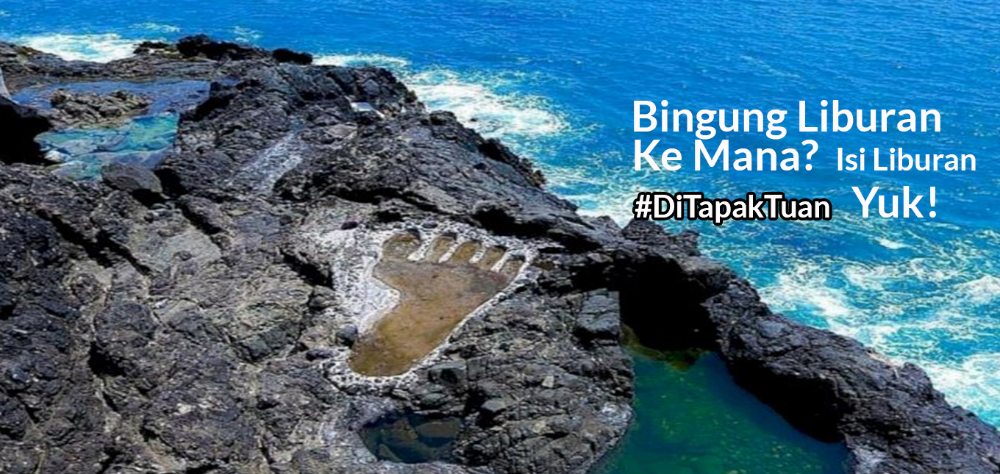
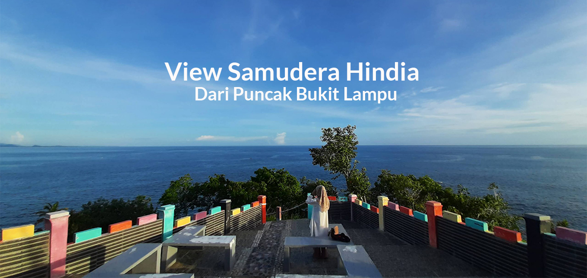
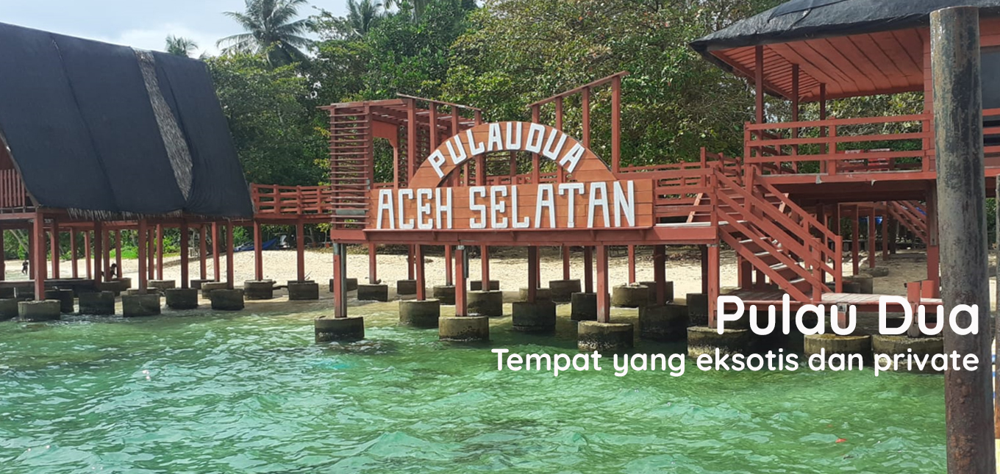
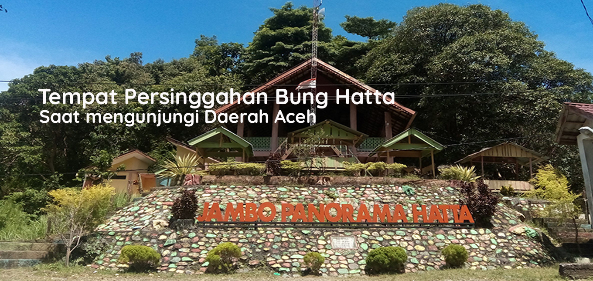

Tahun 1953 Drs. Mohammad Hatta atau kerap disapa Bung Hatta, pendamping setia Soekarno pada masa transisi Negara Kesatuan Republik Indonesia (NKRI), menginjakkan kaki di Aceh, upaya penguatan kesatuan dan persatuan daerah. Menggenang itu, prasasti berukuran seratus centimeter berpagar rantai besi, masih tampak utuh diatas bukit yang sudah direnovasi menjadi sebuah Caffe, tepatnya di Gampong Lhok Beukam, Kecamatan Tapak Tuan, Aceh Selatan. Sebagi wakil presiden Republik Indonesia pada masa itu, lokasi persinggahan proklamator tersebut menjadi salah satu daya tarik destinasi wisata di Kota Naga, selain nuansa pemandangan yang indah, juga memiliki nilai pendidikan sejarah Salinan ini telah tayang di Kawasan yang diberi nama puncak gunung Pintoe Angen ini
Tempat wisata ini sangat unik karena tempat pemandiannya bertingkat-tingkat sampai tujuh tingkat. Setiap tingkatannya memilik kolam yang bisa menjadi tempat berenang. Dalam legenda Tuan Tapa di ceritakan bahwan bahawa air terjun ini merupakan tempat pemandian puteri bungsu ( puteri naga ). Lokasinya terletak di kecamatan tapaktuan, desa batu hitam. Tempat wisata yang sangat cocok di kunjungi jika akhir pekan dan hari libur karena akan memberikan suasana santai dengan pepohonan yang rindang, serta udara sejuk pegunugan yang akan membuat diri anda rileks dan nyaman
The Archipelago South of Aceh. Begitulah julukan yang diberikan oleh pelancong mancanegara ketika berwisata ke Tapaktuan, Aceh Selatan. Tapaktuan adalah sebuah kota kecil yang berada di pesisir selatan Aceh. Daerah ini memang terkenal memiliki banyak sekali objek wisata. Dari wisata alam hingga wisata mistis, dari yang sudah melegenda hingga yang baru dibuka, dan dari indahnya hamparan hijau pegunungan sampai pada keelokan pantai dan biru lautnya